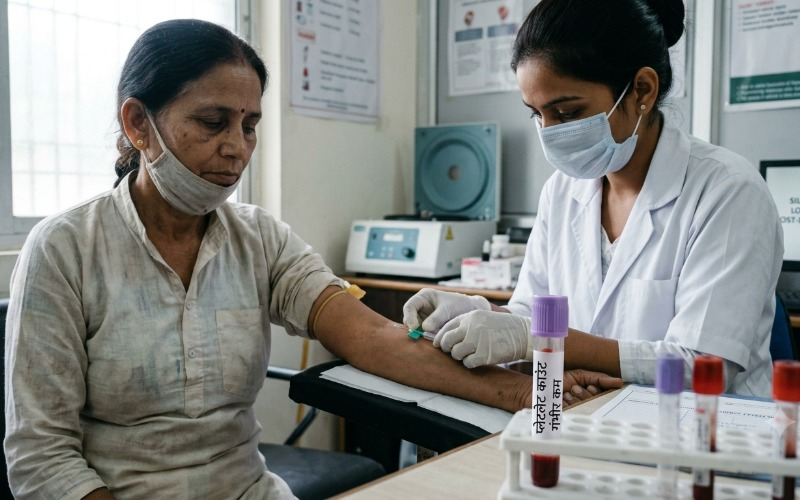
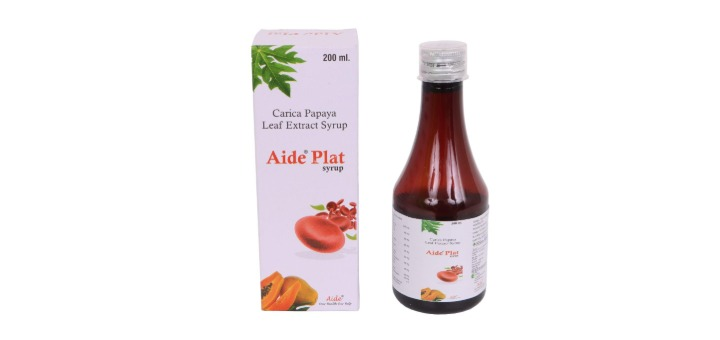

Fever breaks. You start feeling like yourself again. And then your doctor tells you your platelet count has dropped, sometimes dangerously so. For anyone who's been through dengue or malaria, this second, quieter battle is often the one nobody warned them about.
Platelets are the tiny blood cells responsible for clotting. Without enough of them, your body struggles to stop even minor bleeding, and in severe cases, internal bleeding becomes a real risk. Both dengue and malaria attack the body in ways that directly suppress platelet production and accelerate their destruction:
In both cases, the fever may resolve well before platelet counts recover, which is why the days and weeks after "feeling better" are often the most medically important, not the least.
Platelets have a short lifespan, so the body needs to continuously produce new ones. After an infection like dengue or malaria, bone marrow function needs time and the right nutritional building blocks to ramp production back up to normal levels. This is why simply "waiting it out" can mean weeks of fatigue, easy bruising, and repeated blood tests before counts stabilize on their own.
Alongside medical monitoring, certain nutrients and botanical extracts are widely recognized for supporting the body's natural platelet production process:
It's important to say clearly: a significant drop in platelet count, especially after dengue or malaria, needs to be monitored by a doctor, and severe cases may require hospital care or transfusion. Nutritional support is meant to work alongside medical guidance during recovery, not replace it.
For the recovery period, once you're medically cleared, Aide Plat is formulated with papaya leaf extract, folate, B12, vitamin C, and iron, designed to give your body the specific building blocks it needs to rebuild platelet counts and regain strength after dengue or malaria. It's the support your body needs for the part of recovery that happens after the fever is gone.
Recovering from dengue or malaria? Explore Aide Plat and give your body the support it needs to bounce back fully.

Aide Plat, formulated with papaya leaf extract, folate, B12, vitamin C, and iron